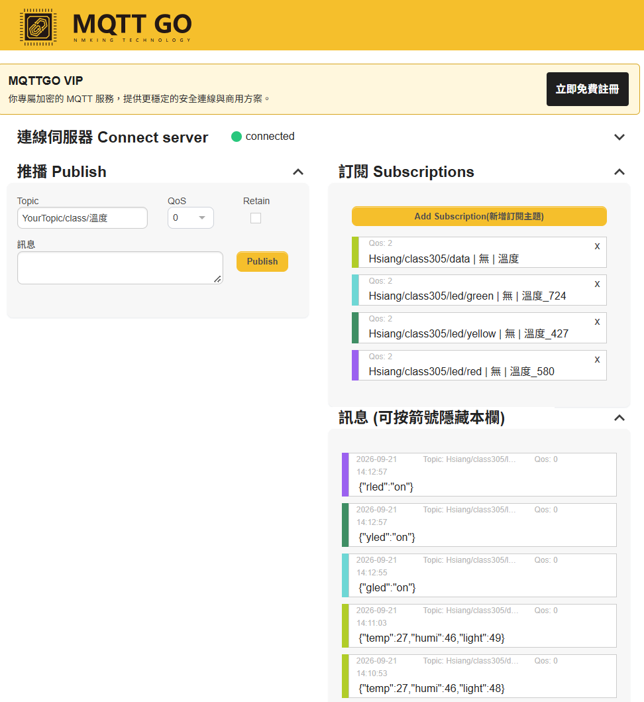
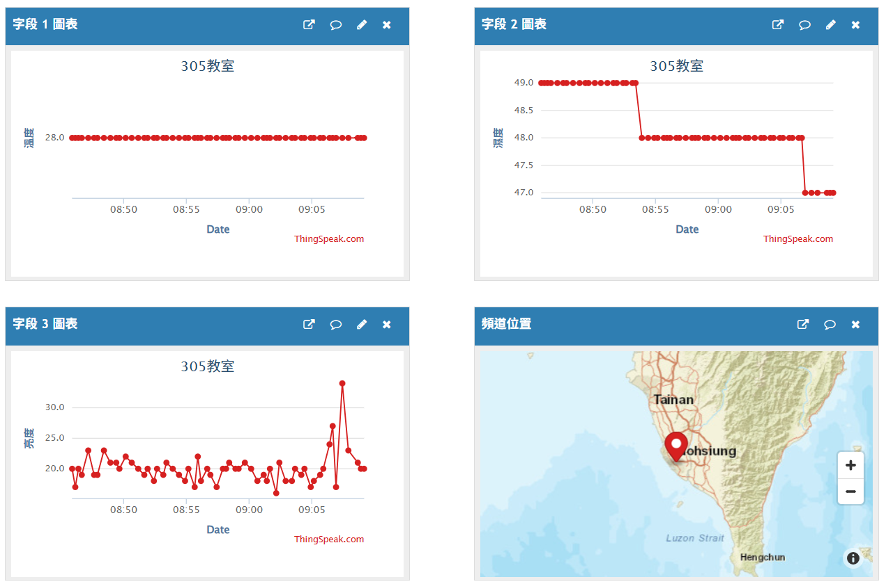
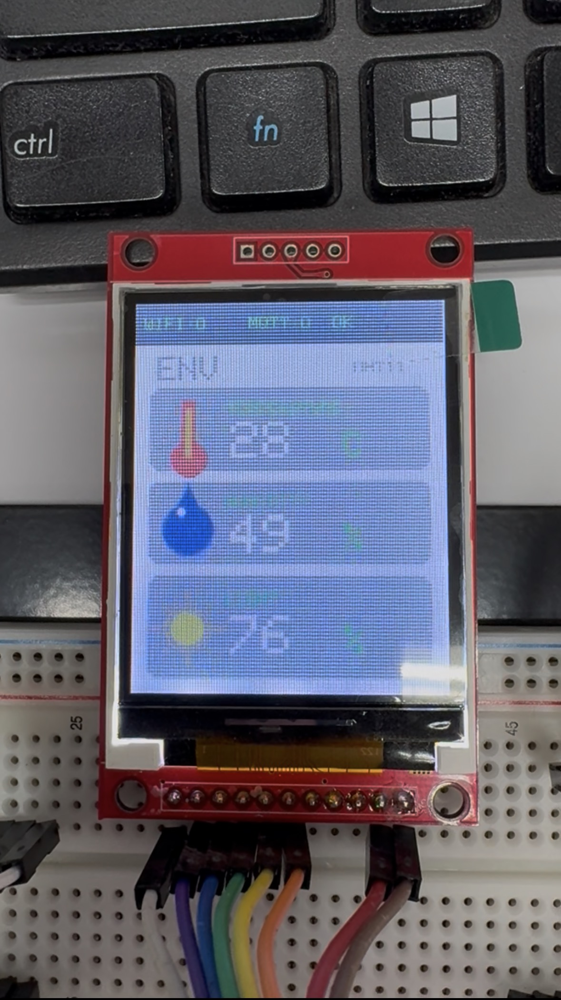
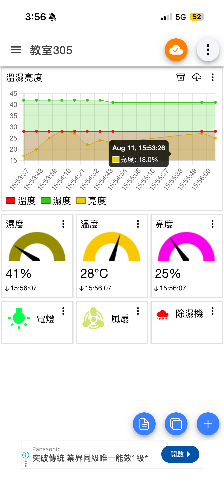

◌
感測與輸入
DHT11、光敏電阻、PIR、超音波與藍牙，從讀取世界開始。
WHY THIS PROJECT
DHT11、光敏電阻、PIR、超音波與藍牙，從讀取世界開始。
Wi‑Fi、HTTP API、ThingSpeak、LINE 與 MQTT，讓資料真正流動。
OLED、ILI9225 TFT 與電子紙，將狀態轉成看得懂的介面。
PROJECT IN ACTION




EXAMPLE INDEX
找不到符合的範例。
READY TO BUILD?
從最簡單的 LED 開始，逐步走到 MQTT、TFT 與電子紙儀表。